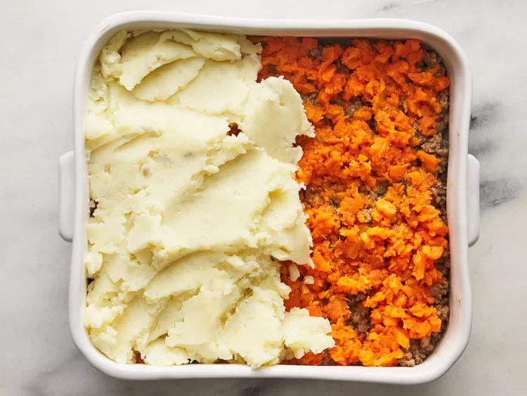

Sheperd's Pie
This shepherd's pie is a comforting casserole of savory ground beef stew, topped with a layer of cheesy mashed potato that's guaranteed to satisfy even the pickiest of eaters. Plus, it's a great way to sneak some extra veggies into dinner! Shepherd's pie is the ultimate all-in-one dish. It's got everything you could ask for in a meal: hearty meat, starchy potatoes, colorful veggies, and gooey cheese.This shepherd's pie comes together in less than an hour and it's sure to be your new favorite casserole.

Ingredients
- 4 large potatoes, peeled and cubed
- 1 tablespoon butter
- 1 tablespoon finely chopped onion
- 1/4 cup shredded Cheddar cheese
- salt and pepper to taste
- 5 carrots, chopped
- 1 tablespoon vegetable oil
- 1 onion, chopped
- 1 pound lean ground beef
- 2 tablespoons all-purpose flour
- 1 tablespoon ketchup
- ¾ cup beef broth
Instructions
- Gather all ingredients.
- Bring a large pot of salted water to a boil. Add potatoes and cook until tender but still firm, about 15 minutes. Drain and mash. Mix in butter, finely chopped onion and 1/4 cup shredded cheese. Season with salt and pepper to taste; set aside.
- Bring a large pot of salted water to a boil. Add carrots and cook until tender but still firm, about 15 minutes. Drain, mash and set aside. Preheat oven to 375 degrees F (190 degrees C.)
- Heat oil in a large frying pan. Add onion and cook until clear. Add ground beef and cook until well browned. Pour off excess fat, then stir in flour and cook 1 minute. Add ketchup and beef broth. Bring to a boil, reduce heat and simmer for 5 minutes.
- Spread the ground beef in an even layer on the bottom of a 2 quart casserole dish. Next, spread a layer of mashed carrots. Top with the mashed potato mixture and sprinkle with remaining shredded cheese.
- Bake in the preheated oven for 20 minutes, or until golden brown.